Arecx6をご利用のお客様
Arecx6は標準で１ヶ月程の全番組を録画しております。HDD容量が上限に達すると、日付が古い順から削除されていきます。なお、著作権上、番組のダウンロードなどは出来ません。また、アクセスが不能など不具合時はサポートまでご連絡下さい。
サポートはこちら
support ☆ dokodemo.tv
☆をアットマークに変更してください
※注意
パソコンでの視聴は初回のみ視聴用証明書のインストールが必要になります。
こちらの作業は初回のみの設定作業となります。２回目以降は行う必要はございません。
ランチャーのインストール
-
アレックス６ランチャーをインストールして下さい。
http://www.arecx6.jp/download/../index.htmlにアクセスして、Windows用ユーティリティ本体をクリックして、インストールして下さい。
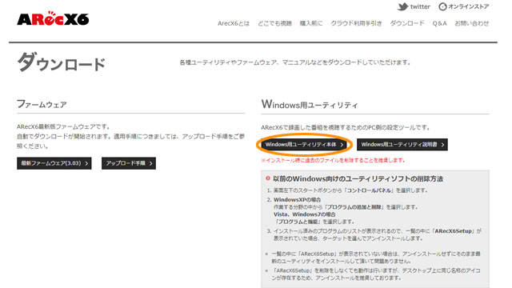
-
視聴用証明書の取得
インストール後にランチャーを起動して、証明書登録をクリックして、実行して下さい。この作業はご使用になるパソコンごと初回のみの作業となります。
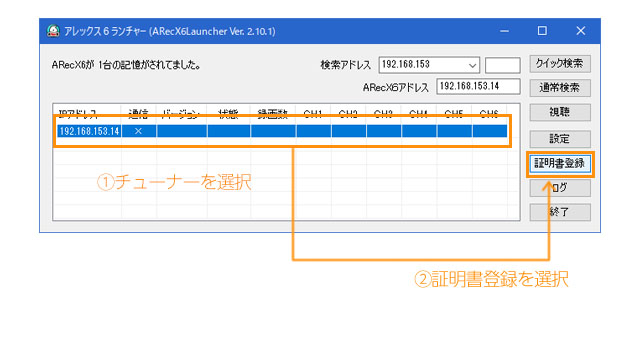
-
作業後はランチャーの必要はございませんので削除して下さい。設定などはこちらで完了しておりますので、変更などは必要はございません。
くれぐれも設定変更などは行わないようにして下さい。
お客様が設定変更して視聴ができなくなった場合は再度初期設定の作業が必要になり、追加料金が発生いたします。安全のため、ランチャーの設定変更など不用意にアクセスしないようにお願いいたします。
VPNに接続(PPTPの設定)
ここから視聴へのご説明になります。VPNにてGaku-uサーバーに接続頂きます。ご連絡しましたアカウントとパスワードをお手元にご用意下さい。
Windows 10
1.スタートメニューより「設定」を開く
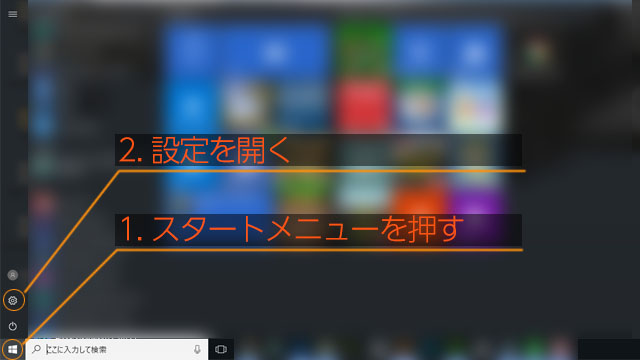2.ネットワークとインターネットをクリック
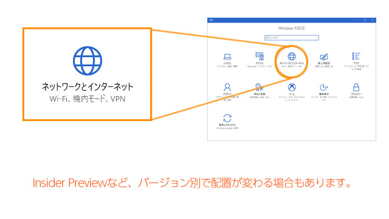3.VPNタブをクリック
4.新しい接続を追加する
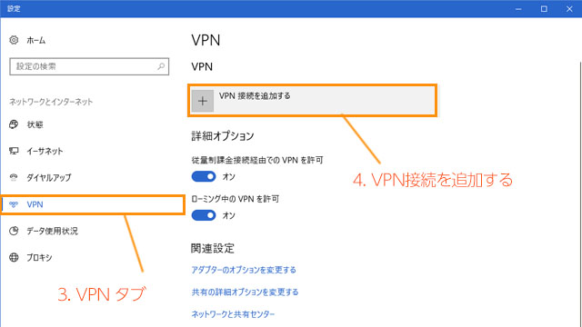5.次のように設定をします
| VPN プロバイダ | Windows(ビルトイン) |
|---|
| 接続名 | (任意) |
|---|
| サーバー名またはアドレス | gaku-u153.dyndns.biz |
|---|
| VPNの種類 | Point to Point トンネリングプロトコル(PPTP) |
|---|
| サインイン情報の種類 | ユーザ名とパスワード |
|---|
| ユーザー名&パスワード | 別途送付 |
|---|
"サインイン情報を保存する"にチェックを入れると、ログイン毎に再入力の必要がなくなります
Windows 7
-
1.スタートメニューより、コントロールパネルを選択
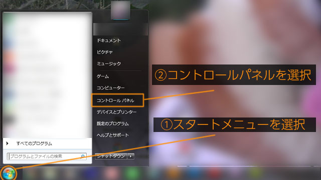
-
2.ネットワークとインターネットを選択
3.ネットワークと共有センターを選択
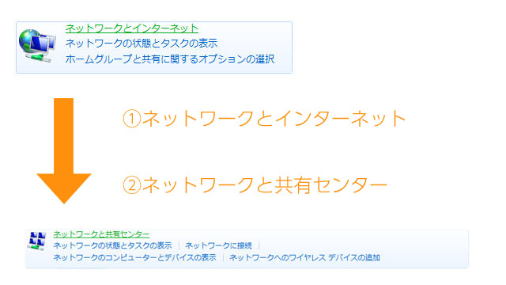
-
4.新しい接続またはネットワークのセットアップを選択
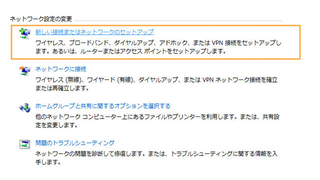
-
5.「職場に接続します」をダブルクリック
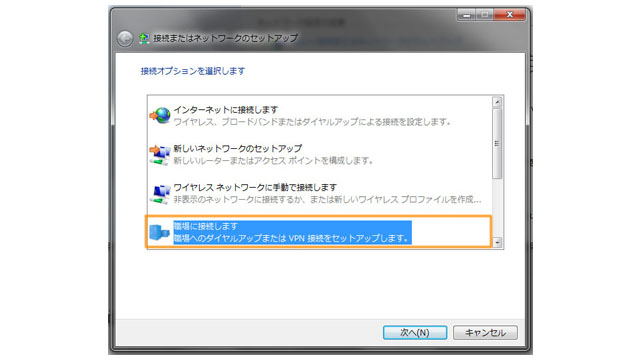
-
6.「インターネット接続(VPN)を使用します」を選択
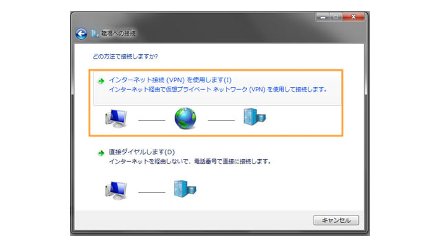
-
7.次のように設定をします
| インターネットアドレス | gaku-u153.dyndns.biz |
|---|
| 接続名 | (任意) |
|---|
| "今は接続しない。自分が後で接続できるようにセットアップのみを行う"にチェック |
|---|
"今は接続しない。自分が後で接続できるようにセットアップのみを行う"にチェック
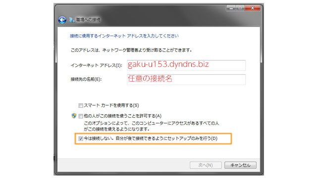
-
8.別途送付されるユーザ名およびパスワードを入力します
"サインイン情報を保存する"にチェックを入れると、ログイン毎に再入力の必要がなくなります
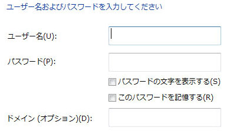
MacOSX
Mac OSX 10.12以降は、PPTP接続に対応していません
1.Dockより、システム環境設定を開く
2.「ネットワーク」アイコンを選択
3.左側タブの下の「＋」を選択
-
4.次のように設定をします
| インターフェース | VPN |
|---|
| VPN タイプ | PPTP |
|---|
| サービス名 | 任意 |
|---|
-
5.次のように設定をします
| サーバアドレス | gaku-u153.dyndns.biz |
|---|
| アカウント名 | ユーザー名を入力 |
|---|
| 暗号名 | 最大(128ビットのみ) |
|---|
"メニューバーにVPNの状況を表示"にチェックを入れる
6.パスワードを入力する
iPhone
iOS 10以降は、PPTP接続に対応していません
1.「設定」アプリを開く
2.「一般」を選択
3.「VPN」を選択
4.「VPN構成を追加...」を選択
5.「タイプ」から、「PPTP」を選択
6.次のように設定をします
| 説明 | 任意 |
|---|
| サーバ | gaku-u153.dyndns.biz |
|---|
| アカウント | 別途送付 |
|---|
| RSA SecurID | オフ |
|---|
| パスワード | 別途送付 |
|---|
| 暗号化レベル | 最大 |
|---|
| すべての信号を送信 | オン |
|---|
| プロキシ | オフ |
|---|
設定したら「完了」を選択してください
7.設定したVPNが追加されていることを確認したら「状況」スイッチをONにする
Android
-
1.「設定」アプリを開く
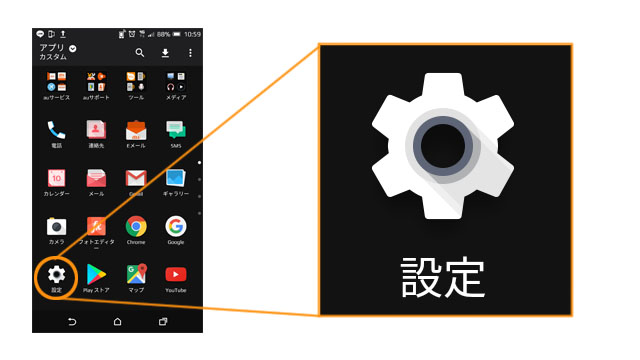
-
2.「無線とネットワーク」グループの、詳細をタップ
3.「VPN」をタップ
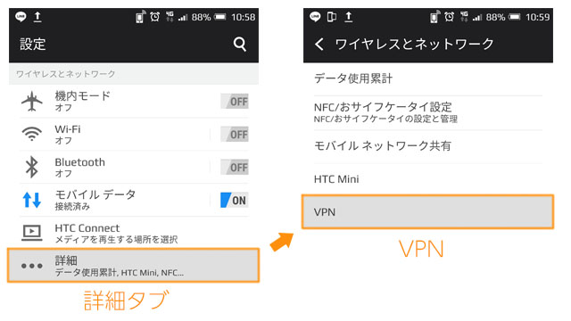
-
4.右上のメニューボタンより、「VPNプロフィールの追加」を選択

-
5.次のように設定をします
| 名前 | 任意 |
|---|
| タイプ | PPTP |
|---|
| サーバーアドレス | gaku-u153.dyndns.biz |
|---|
| PPP暗号化(MPPE) | オン |
|---|
| 詳細オプション | 非表示 |
|---|
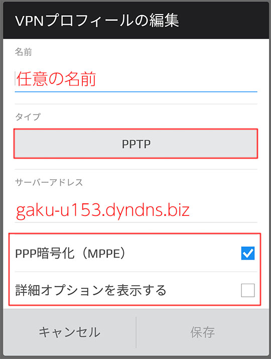
-
6.設定されたVPNアカウント名をタップし、別途送付されたユーザー名、パスワードを入力
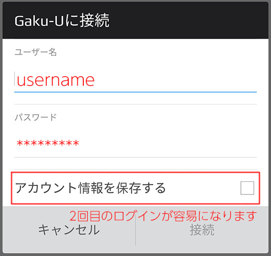
-
7.通知バーにVPNマークが表示され、「接続されました」と表示されれば完了です。

接続後
-
1.ブラウザにてhttp://192.168.0.112/filelist.phpにアクセスして下さい。
-
2.Arecx6では、次の検索が使用できます
- ジャンル検索
- ジャンル別に検索が可能です。
- 過去番組表
- カレンダーにて過去の番組にアクセス可能です。（およそ１ヶ月から２ヶ月程の番組が全部録画しております）
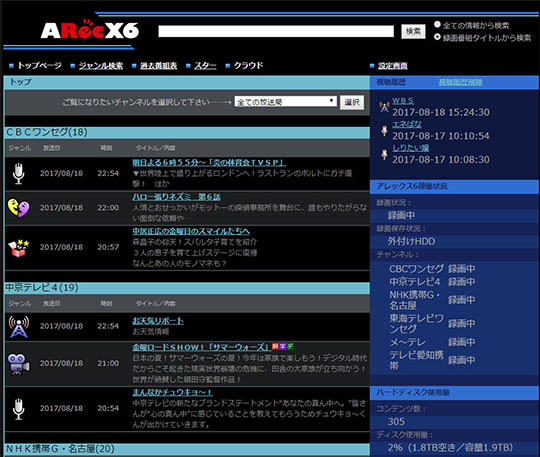
-
3.それぞれクリック後に別窓が開き視聴が開始されます。音が出なかったり、音量が大きすぎる場合は、加減してください。